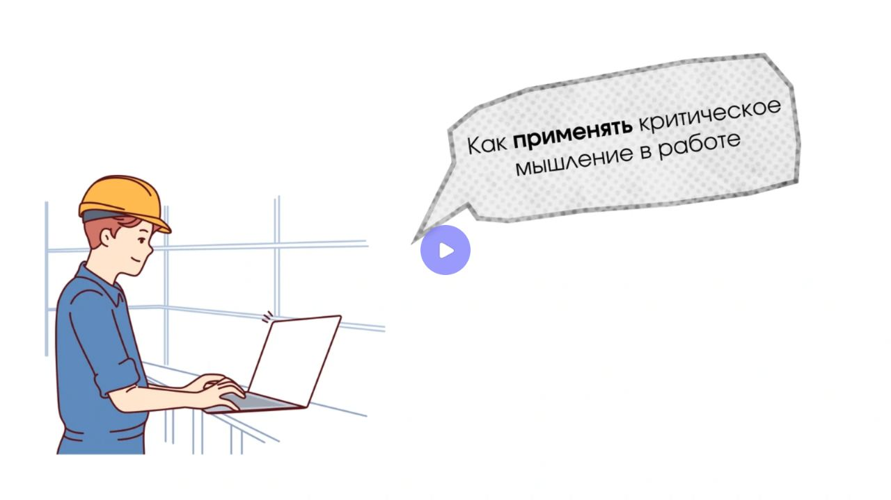
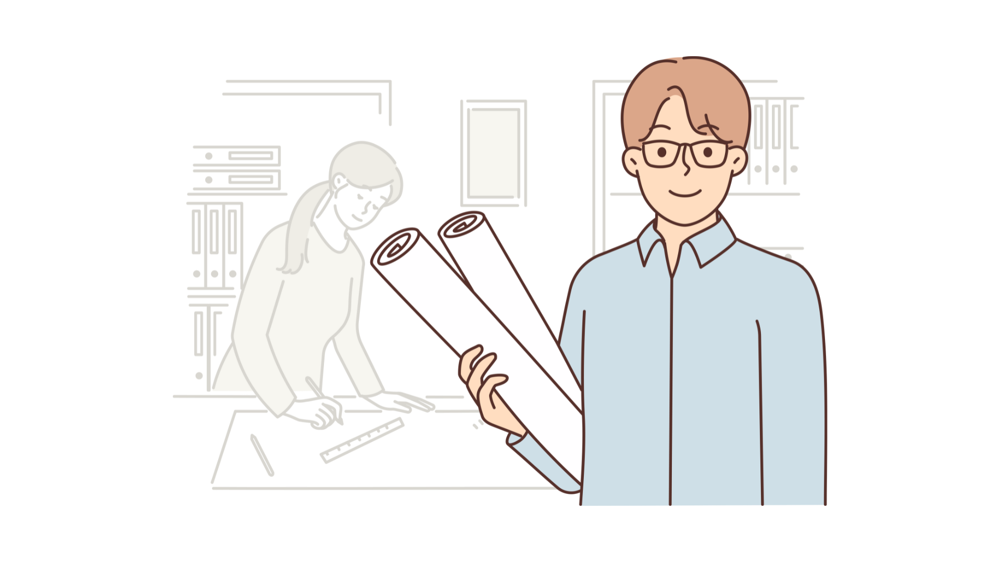
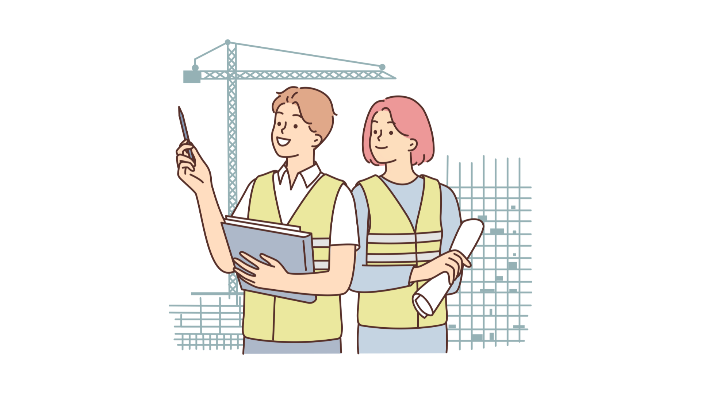
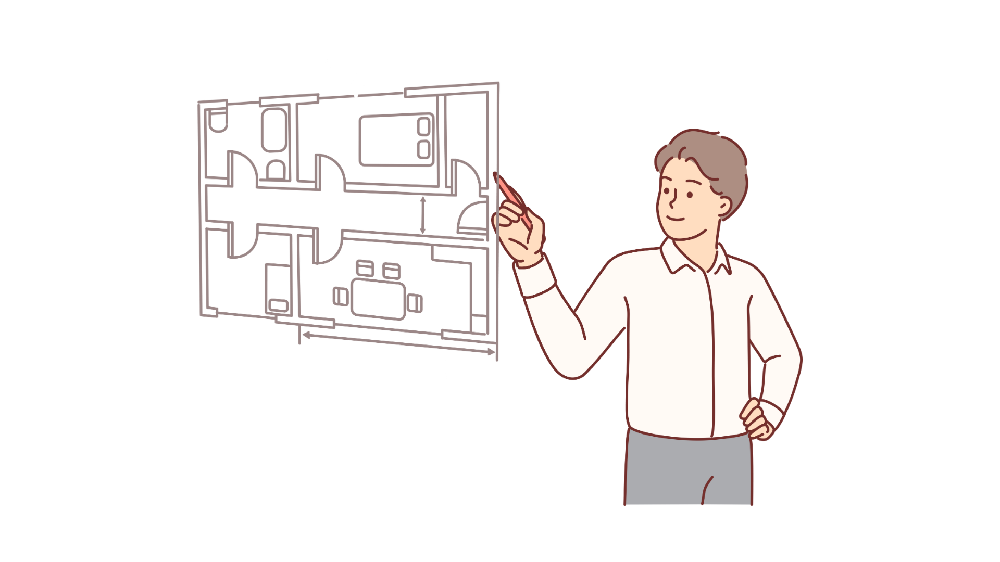
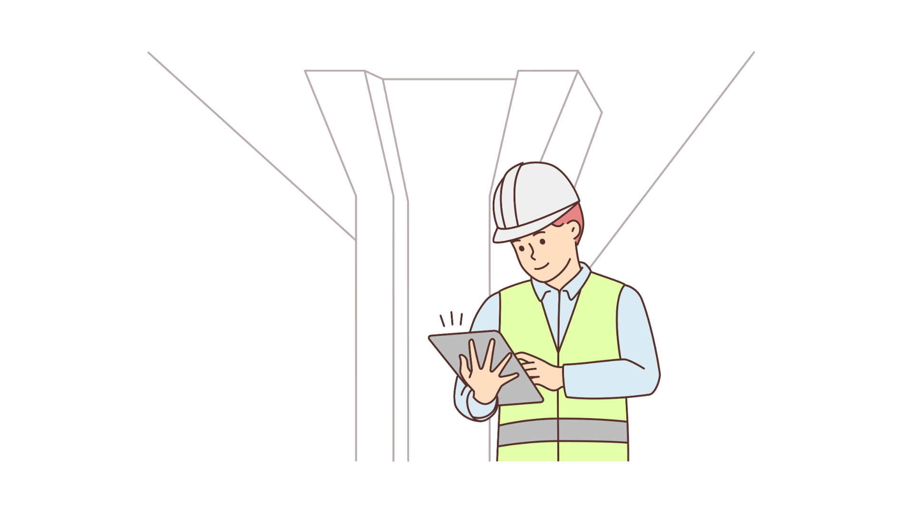

Коммуникативные навыки в строительстве: быстрокурс для ИТРЛокальный архив курса
МИКРОКУРСЫ. 2026 · Коммуникативные навыки в строительстве
Формируем критическое мышление
Вера СафуановаЭксперт строительного контроля с опытом работы в строительной сфере более 15 лет
Критическое мышление — как геодезический контроль на стройке: без него фундамент покажется крепким, но первый расчет рисков выявит трещины, которых можно было избежать.
Фраза опытного инженера-строителя
Критическое мышление помогает инженеру анализировать информацию, оценивать риски и принимать обоснованные решения. Этот навык необходим на всех этапах строительного производства.
Вот как он работает на практике:
помогает быстро адаптироваться к новым правилам и изменениям в нормах
снижает количество ошибок при работе с проектной документацией
позволяет объективно оценивать работу подрядчиков
помогает находить оптимальные решения в нестандартных ситуациях
позволяет предвидеть последствия технических решений
Как развить навык критического мышления
Задавайте вопросы
Учитесь сомневаться. Просто послушать и поверить – это просто, но в большинстве случае приведет к негативным последствиям. Поэтому сомнения – это правильно.
Уточняйте детали. Задавай уточняющие вопросы: «Почему именно так произошло?», «Откуда взялась эта информация?». Чем больше деталей вы узнаете, тем точнее и правильный будет ваше решение.
Анализируйте разные точки зрения. Посмотрите на проблему с разных сторон. Попробуйте поставить себя на место другого человека и подумать, какие аргументы могли бы привести другие участники дискуссии. Это поможет увидеть полную картину.
Проверяйте факты. Соберите факты с разных точек зрения, это поможет выбрать правильное направление для действий
Анализируйте ошибки
Любую произошедшую ситуацию необходимо разобрать, найти причину почему произошло именно так и подумать. Какие действия могли ы этого не дпускать.
Отталкивайтесь от фактов. Слушайте общее мнение, но всегда выделяйте свое. Не стоит искать виноватых, сначала найдите причину. Стоит разобраться, почему вообще возникла какая-либо непредвиденная ситуация. Возможно, дело вовсе не в людях, а в самой системе работы. Например, может выясниться, что строительные материалы оказались некачественные и это станет решением самого вопроса. Это системное мышление. Оно помогает смотреть глубже, анализировать всю картину целиком и находить эффективные решения быстро и точно.
Не торопитесь с выводами. Необходимо собрать больше информации, посмотреть на вещи шире и спокойно проанализировать ситуацию. Чем дольше мы думаем, тем точнее принимаем решение. А ведь качественные решения — это залог успеха в принятии любого решения.
Пример критического мышления:
Инженер контролирует качество бетонных работ на стройке жилого комплекса. По проекту требуется бетон марки B25 (M350), но поставщик привозит бетон B30 (M400).
Формально можно было бы принять материал и продолжить работу.
Однако инженер подключает критическое мышление:
Анализирует ситуацию: сравнивает характеристики марок B25 и B30, оценивает влияние прочности на несущую способность и затраты.
Сопоставляет риски и выгоды: учитывает нормы СНиП, ГОСТ и проектные требования, чтобы избежать нарушений.
Делает обоснованный выбор: • если применение более прочного бетона экономически и технически оправдано — согласовывает изменения с заказчиком и проектировщиком; • если использование приведет к перерасходу или срыву сроков — решает вернуть поставку и обеспечить нужную марку B25.
Так инженер не просто выполняет инструкцию, а принимает осознанное, аргументированное решение.
Еще один пример критического мышления смотрите в коротком видеоролике:
Видеоролик
Потоковое видео доступно на исходном сервисе. Файл и стенограмма не предоставлены штатным способом.

Источник и ограничения. Статическое содержание не проверяет ответы и не воспроизводит анимацию.
Теперь перейдем к тренировке. Ваша задача внимательно ознакомиться с реальными кейсами ниже и, применяя критическое мышление, правильно ответить на вопросы.
Кейс 1
Карточки для самопроверки
Исходные карточки для самопроверки. Локальная страница не оценивает ответы.
1. Вы являетесь ответственным инженером проекта строительства жилого дома. По проекту предусмотрено использование конкретного типа арматуры для фундамента здания. Однако поставщик сообщает вам, что данная арматура временно отсутствует на складе и предлагает аналогичную продукцию другого производителя. Какие шаги вы предпримете?
Согласитесь на замену продукции без дополнительной проверки, поскольку она кажется идентичной заявленной в проекте
Проведете проверку характеристик предлагаемого материала и сравните их с исходными показателями, после чего примете решение
Откажетесь от замены и дождетесь поставки необходимого материала, даже если это задержит сроки выполнения работ
Поручите помощнику провести оценку качества нового материала и доверитесь его мнению
Ответ, отмеченный в данных источника
Проведете проверку характеристик предлагаемого материала и сравните их с исходными показателями, после чего примете решение

Источник и ограничения. Статическое содержание не проверяет ответы и не воспроизводит анимацию.
Кейс 2
Карточки для самопроверки
Исходные карточки для самопроверки. Локальная страница не оценивает ответы.
1. На стройплощадке обнаружен дефект конструкции несущей стены, который потенциально может повлиять на устойчивость всего здания. Что является наиболее рациональным решением проблемы?
Игнорировать проблему до завершения этапа строительных работ, чтобы избежать задержки сроков сдачи объекта
Сообщить руководству компании и предложить провести детальное обследование конструкций силами специализированной организации
Усилить конструкцию самостоятельно, используя доступные строительные материалы
Остановить работы до полного устранения дефекта собственными силами строительной бригады
Ответ, отмеченный в данных источника
Сообщить руководству компании и предложить провести детальное обследование конструкций силами специализированной организации

Источник и ограничения. Статическое содержание не проверяет ответы и не воспроизводит анимацию.
Кейс 3
Карточки для самопроверки
Исходные карточки для самопроверки. Локальная страница не оценивает ответы.
1. Во время проведения земляных работ обнаружены неизвестные ранее подземные коммуникации, не учтенные в проектной документации. Какое действие будет оптимальным в данной ситуации?
Продолжить строительство согласно первоначальному плану, полагаясь на профессионализм рабочих
Обратиться к проектировщикам для оценки рисков и корректировки плана дальнейших действий
Самостоятельно изменить маршрут прокладки коммуникаций и продолжить работы
Привлечь стороннюю организацию для внесения изменений и разработки альтернативного варианта реализации проекта
Ответ, отмеченный в данных источника
Обратиться к проектировщикам для оценки рисков и корректировки плана дальнейших действий

Источник и ограничения. Статическое содержание не проверяет ответы и не воспроизводит анимацию.
Кейс 4
Карточки для самопроверки
Исходные карточки для самопроверки. Локальная страница не оценивает ответы.
1. Ваш сотрудник допускает регулярные нарушения техники безопасности на строительном объекте. Какой подход лучше всего использовать для исправления ситуации?
Сделать выговор сотруднику и напомнить о правилах поведения на площадке
Немедленно уволить сотрудника за нарушение требований охраны труда
Организовать дополнительное обучение и инструктаж по технике безопасности для всех сотрудников подразделения
Доверить контроль соблюдения норм другому сотруднику, надеясь, что проблема решится сама собой
Ответ, отмеченный в данных источника
Организовать дополнительное обучение и инструктаж по технике безопасности для всех сотрудников подразделения

Источник и ограничения. Статическое содержание не проверяет ответы и не воспроизводит анимацию.
Замечательно! Следующий урок – заключительный. В нем мы научимся применять в работе эмоциональный интеллект.